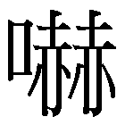
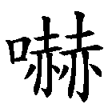
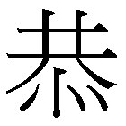
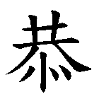
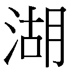
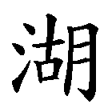

採用本地筆形
以「思源黑體香港」為基礎製作，多數字形符合最新公佈的《香港電腦漢字參考字形》。
平衡印刷字體
《香港電腦漢字參考字形》趨近楷書筆形。昭源黑體會考慮實際情況，將部份字樣改為黑體慣用筆形。
收字量大 風格一致
繼承思源黑體*優點，除了完整覆蓋Big5及HKSCS字集、支援香港字外，並支援簡體中文、日文、韓文字集，遇到缺字的機會大減。
* Language-specific OpenType/CFF版本七款字重 配搭方便
提供和思源黑體相同的七種字重。
源起
「思源黑體」自 2.0 版開始增加了香港地區字形支援。「思源黑體香港版」的字形依據是 2017 年 5 月公布、香港政府與中文界面諮詢委員會合作編訂的《香港電腦漢字參考字形》，而這份文件是以教育局的《常用字字形表》為主要參考依據。《常用字字形表》於 1989 年初版，其後多次修訂，此書為四千七百多個常用字訂定標準字形，原意是為小學教師、學生、教材出版者提供參考，以減低社會上同字異形現象對小學語文教學所造成的影響。《字形表》收字量不多，當中的標準字形是用人手以楷書寫成（2007 年重排本改用電腦楷書編印），針對的也是手寫而不是印刷書體。《香港電腦漢字參考字形》的做法大致是，先從《字形表》整理出各個部件的寫法，然後將之外推至大五碼 (Big5) 以及部份香港增補字符集 (HKSCS) 的字符，從而得出一套「適合香港使用」的電腦字形。
《香港電腦漢字參考字形》採用「宋體與楷體字形規律一致的總體原則」，其字形規律「並無楷宋之分」。在這總體原則下，宋體字的筆畫構成和種類基本上是完全依照楷體訂定（例如楷書作點者，宋體亦作點，此即一致之「字形規律」），兩者只會在筆畫的風格上有差別。
相較於思源黑體台灣版、微軟正黑體這類根據台灣教育部標準字形製作的字體，《香港電腦漢字參考字形》提供的字形無疑較切合香港實際情況。不過，「宋、楷規律一致」的原則卻令一些字的印刷體（宋體、黑體）寫法顯得比較奇怪。如下圖：
| 參考字形（宋） | 參考字形（楷） | 思源黑體 香港 | 慣見字形 |
|---|---|---|---|
|  |  | ||
|  |  |

|
|
|  |  |
正如《香港電腦漢字參考字形》文件所述，「本文件並非為香港社會的日常用字訂立規範， 也不限制字體軟件開發商所採用的風格」。商用字體一般都會在「標準性」和「美觀性」之間取得平衡。
「昭源黑體」的取態跟商用字體類似。本字體參考「思源黑體 香港」中的香港標準字形和市面以商業字體排印的出版物所採字形，嘗試從中找出一個較容易為一般使用者接受的方案。上述三字，本字體會改用最右一欄的慣見字形而不跟從《參考字形》。
製作方針
思源黑體支援多個地區的字形，所以遇到《參考字形》的寫法和本字體屬意的寫法不同而須修改時，本字體會首先考慮使用思源黑體本身已有、屬於其他地區的字形。例如前面的嚇、湖、恭三字，日本版字形較符合大眾習慣，製作時只須將該碼位的字圖從香港版改為日本版即可。另有少數字符，本字體所取筆形雖然不見於思源黑體 2.0 版，但見於舊版，這時候也可以套用舊版的字形（例如「吔」字是取自舊版日本版）。
假如本字體所選筆形與其他地區字形都不符合，就須修改字圖。例如「零」字，本字體決定「雨」在上方時四點作橫筆，下方的「令」則保留香港寫法，但其他地區的字圖都沒有這個筆形組合，無法直接套用，必須人手修改。
| 思源黑體（日‧韓） | 思源黑體（中） | 思源黑體（港‧台） | 昭源黑體 |
|---|---|---|---|
修改的筆畫均取自原字體，以求風格一致。礙於人力所限，除常用字外，本字體製作時會盡量避免修改原字圖。這有兩個辦法：（一）忽略原版思源黑體視為屬於地區差異的細節（例如個別筆畫是否與其他筆畫接觸、𠂆部件兩筆轉折處有沒有裝飾）和（二）不常用的字保留不改或改用其他地區相近的字形。
與原版思源黑體的分別
名稱
「思源黑體」會因應使用者的作業系統語言和所使用的軟件以英文名稱或本地化名稱顯示。「昭源黑體」則一律使用英文名稱「Chiron Sans HK」，不會顯示中文名稱。
字重
昭源黑體提供和思源黑體相同的 7 款字重。支援多字重的軟件會將字型分為「字型家族」和「字重」兩個選單。本字款的「字型家族」是「Chiron Sans HK」，其後的就是字重。不支援多字重的軟件只會有一個字型選單，軟件會將 Regular 和 Bold 視為一個家族，以 Chiron Sans HK 顯示，再通過「粗體 Bold」按鈕決定是否使用 Bold 字重，Regular 和 Bold 以外的字重則會當成獨立字體分開列出。
收字
昭源黑體以「思源黑體 香港」中的 Language-specific OpenType/CFF (OTF) 版為基礎製作。這個版本覆蓋 Unicode 超過 44,000 碼位，並可透過應用程式的 locl 功能（如支援）調用符合其他地區寫法的字圖，令每個字重的字圖總數高達 65,535 個。昭源黑體完整保留這個版本的碼位覆蓋，不過刪除了以 locl 功能調用其他地區字圖的功能。
下載
使用者可以在本專案 Github 網頁中的 Releases 頁面下載「昭源黑體」的最新版本。字型檔以 ZIP 格式壓縮，提供 OTF、TTF 兩個版本：
- OTF 版本：字體以 OpenType/CFF 格式封裝，建議一般安裝使用。
- TTF 版本：字體以 TrueType 格式封裝。這個版本主要是為遇到兼容性問題的使用者而設，例如某些舊版的 PDF 製作軟件會因無法支援思源黑體的 OTF 格式而在輸出時變成亂碼、PowerPoint 不支援 OTF 格式的內嵌字體等。另外，這個版本也額外移除了 4 個高度超出正常中文字的字圖（兩個給 U+2E3A、U+2E3B的 豎排用的長破折號和兩個日語假名疊字符號 U+3031 及 U+3032）。這些字圖令字型有較高的 FontBBox 值，某些軟件會誤將這個值當成行高而造成行高過大的問題（例如在 Adobe Illustrator 軟件會導致選框過大）。為免與 OTF 版本衝突，這一版本的字體名稱改為「Chiron Sans HK TT」。
- Webfont 版本：可供網頁嵌入的字體，使用方法請參閲壓縮檔中 build 目錄內的 README.md 文字檔，或參考本頁面的原始碼。
授權
本字體使用和思源黑體相同的 SIL Open Font License 版本 1.1 授權。